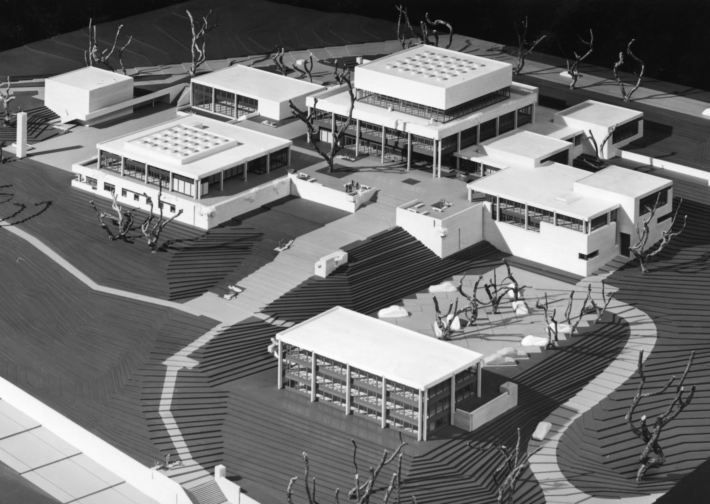
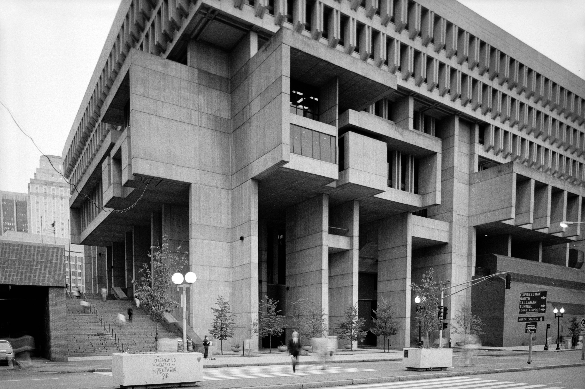
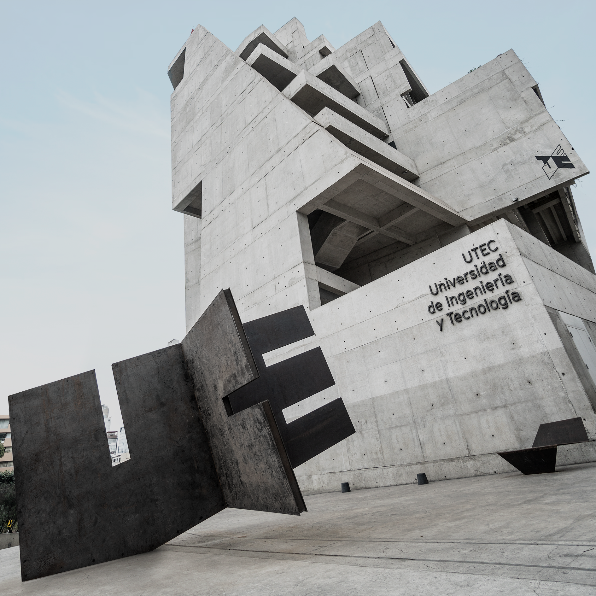
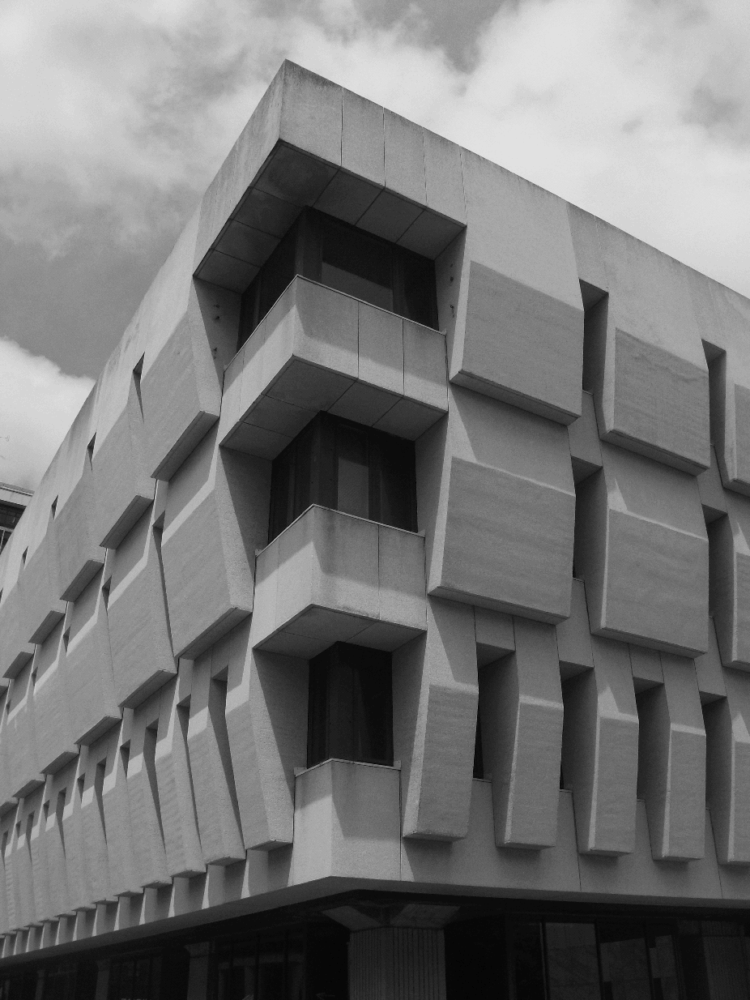
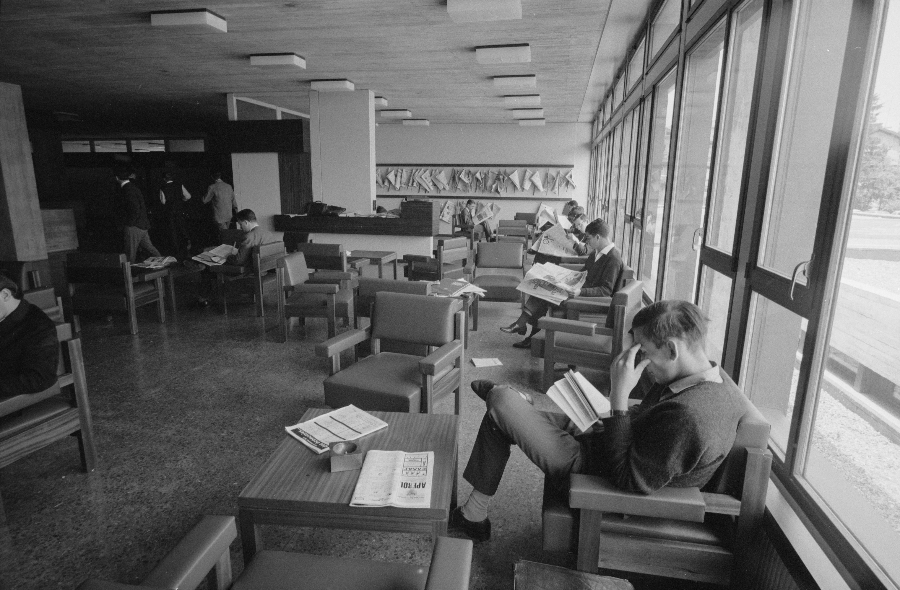
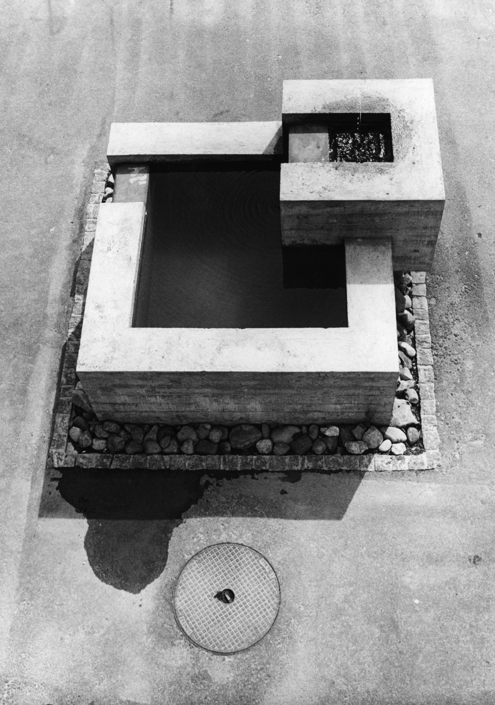
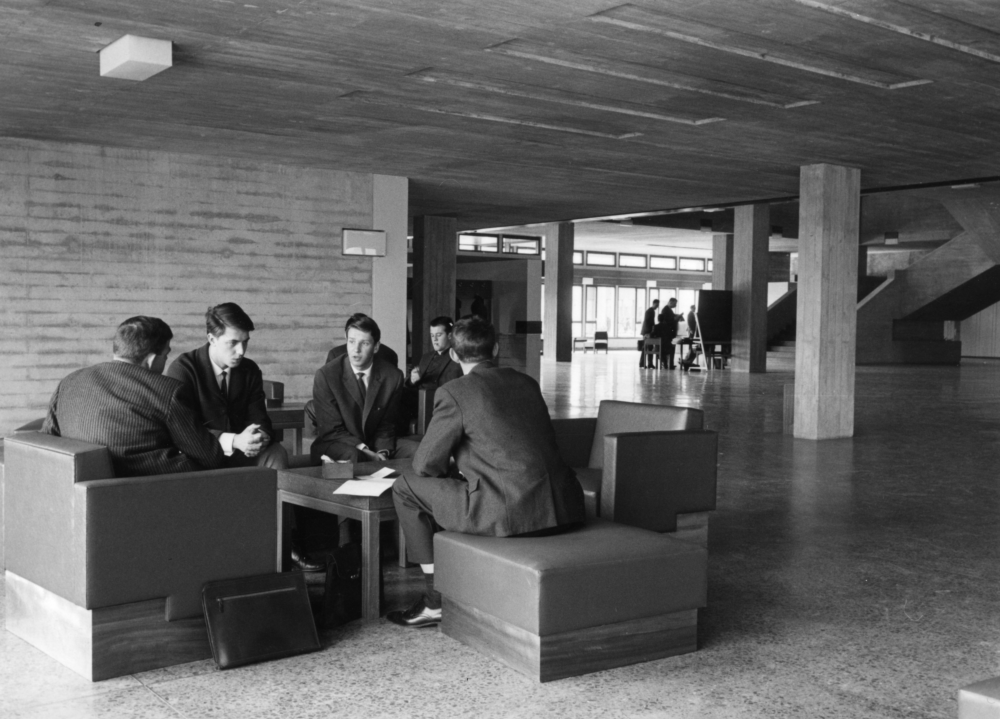
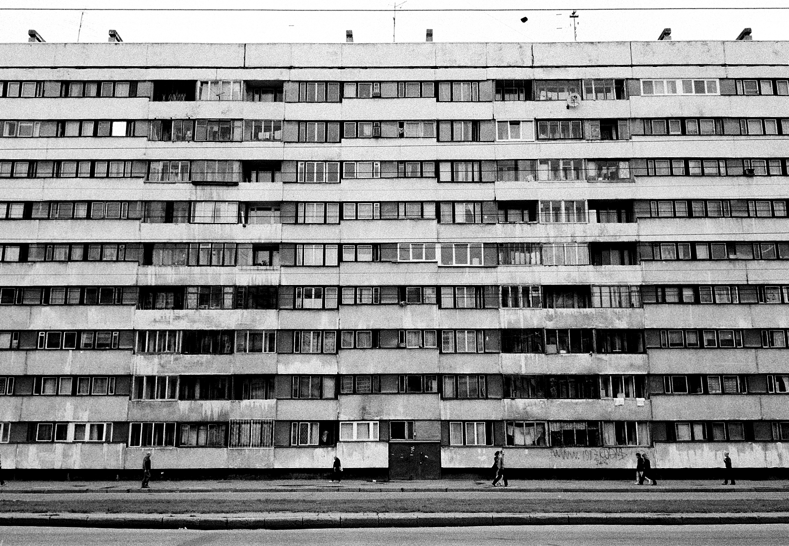

Raw concrete is the defining material of brutalism. Its natural texture, rough surfaces, and unfinished appearance give buildings a strong and distinctive character.

Explore the history, design, and iconic buildings of brutalist architecture.
Learn how brutalist architecture emerged in the mid-20th century and became an influential architectural movement.
Brutalism became popular after World War II, when architects began looking for new ways to create affordable, functional, and modern buildings. The movement was strongly influenced by the need for reconstruction and the growing demand for public spaces, housing, and institutions.
The style became recognizable through its use of raw concrete, massive geometric forms, and exposed structural elements. Architects focused on honesty in materials and construction, creating buildings that were bold, practical, and often controversial. Brutalism soon spread across Europe and the rest of the world, influencing universities, libraries, government buildings, and residential architecture.


Raw concrete is the defining material of brutalism. Its natural texture, rough surfaces, and unfinished appearance give buildings a strong and distinctive character.

Massive shapes, sharp angles, and repetitive patterns create bold architectural compositions. Buildings often feature unusual proportions and dramatic structures.

Brutalist architecture emphasizes functionality and practical spaces. Structural elements are often exposed, making the building's construction part of its visual design.



